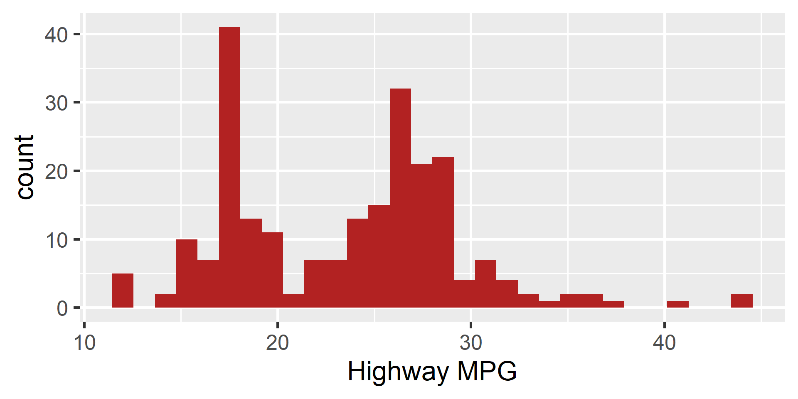

library(tidyverse)
data("mpg", package = "ggplot2")
data("starwars", package = "dplyr")
# We want quick histograms to explore our data
p1 <- ggplot(mpg, aes(x = hwy)) + geom_histogram()
p2 <- ggplot(mpg, aes(x = cty)) + geom_histogram()
p3 <- ggplot(starwars, aes(x = height)) + geom_histogram()Foundations of
Data Science
Spring 2026 | Data 2 (399)
Jeffrey M. Girard | Lecture 14b

Roadmap
Package repetitive code into custom functions using the DRY principle
Control function behavior using arguments, defaults, and branching logic
Apply custom vector functions inside tidyverse data pipelines
Why Write Functions?
The DRY Principle
- As you code, you may find yourself copying and pasting code over and over.
- This violates the DRY Principle:
“Don’t Repeat Yourself!” - Repetition increases the chance of errors and makes your code harder to read.
- Functions allow us to package code into reusable (and sharable) tools.
Repetitive Code Example
This is a lot of typing just to look at three distributions!
Could we make a function to do this more efficiently?
Anatomy of a Function
How Functions Work
A function declaration always requires four core parts:
- Name: How we will call the function later.
- Arguments: The inputs the function expects.
- Body: The actual code that does the work.
(This can be ANY valid R code, e.g., wrangling, visualizing, modeling) - Return: The final output given back to the user.
Our First Function
Let’s build a function to automate our histogram plotting.
It will take a single vector of numbers and return a plot.
Using Our Function
Now we can generate our plots with less typing!
Arguments & Defaults
Adding More Arguments
What if we want to change the fill color of our histogram or the text of our
x-axis label? We can simply add more arguments and use them in the body.
Using the Arguments

The Missing Argument Error
If we use our new function but forget to provide the new arguments, R will throw an error because it doesn’t know what color/label to use.
We can fix this by setting default argument values.
Setting Defaults
We define defaults in the function() declaration. The default will only be used if the argument is missing. The user can still overwrite the defaults!
Using the Defaults
Validation and
Control Flow
Designing for Safety
When sharing functions, the user may not provide the correct data type.
Let’s make a simple function to “center” a variable by subtracting its mean.
Error in `x - mean(x, na.rm = TRUE)`:
! non-numeric argument to binary operatorOur function gives an error message, but it is not a very helpful one…
Luckily, we can modify our function to do better!
Input Validation
We can use an if() statement at the very beginning of our function to check the input. If the input is wrong, we use stop() to print an error message.
Adding Logical Controls
We can add logical arguments (TRUE or FALSE) to give users control over how the function operates. Let’s add a robust argument to our centering function.
center_var_adv <- function(x, robust = FALSE) {
if (!is.numeric(x)) { stop("Input 'x' must be numeric.") }
if (!is.logical(robust)) { stop("Input 'robust' must be logical.")}
# But how do we use the robust argument?
# - we want to subtract the mean if robust is FALSE (default)
# - we want to subtract the median if robust is TRUE
}Branching Logic
We can use an if and else block to create two branches in our function.
The code will do different things based on the robust argument’s value.
center_var_adv <- function(x, robust = FALSE) {
if (!is.numeric(x)) { stop("Input 'x' must be numeric.") }
if (!is.logical(robust)) { stop("Input 'robust' must be logical.")}
if (robust == TRUE) {
# The robust branch uses the median
centered <- x - median(x, na.rm = TRUE)
} else {
# The standard branch uses the mean
centered <- x - mean(x, na.rm = TRUE)
}
centered
}Using the Branching Function
Because the mean is highly sensitive to outliers, our robust argument provides a very helpful alternative path!
Functions in Pipelines
The Payoff in mutate()
Because our center_var_adv() function takes a vector and returns a vector of the same length, it drops perfectly into our tidyverse pipelines.
# A tibble: 234 × 5
manufacturer model hwy hwy_cent hwy_rob
<chr> <chr> <int> <dbl> <dbl>
1 audi a4 29 5.56 5
2 audi a4 29 5.56 5
3 audi a4 31 7.56 7
4 audi a4 30 6.56 6
5 audi a4 26 2.56 2
# ℹ 229 more rowsPrepping for Iteration
You can build any mathematical transformation you need and apply it the same way. For example, a common task is standardization (z-scoring):
# A tibble: 234 × 4
manufacturer model cty cty_z
<chr> <chr> <int> <dbl>
1 audi a4 18 0.268
2 audi a4 21 0.973
3 audi a4 20 0.738
4 audi a4 21 0.973
5 audi a4 16 -0.202
# ℹ 229 more rowsSummary
- Limitless Potential: Functions can package any valid R code or workflow.
- Reduce Repetition: They apply the DRY principle.
- Structure: They require a name, arguments, a body, and a return value.
- Arguments & Logic: You can set default values and use
if/elseto branch function behavior. - Validation: Use
if()andstop()to ensure the correct data is provided. - Functions in Pipelines: Custom functions that return vectors drop seamlessly into
mutate()and prepare us for iteration.